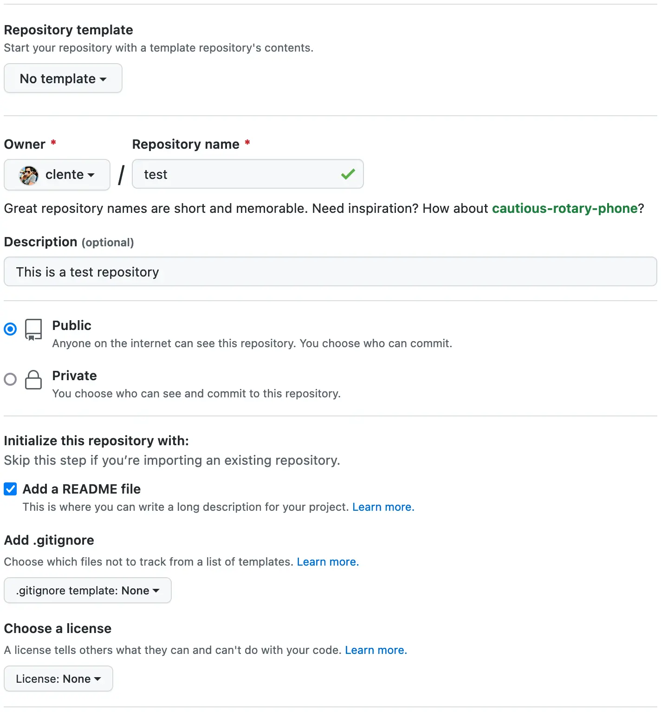
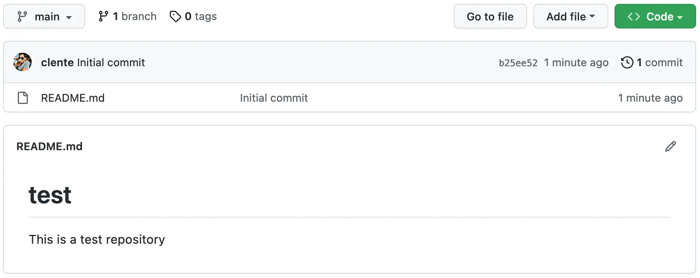
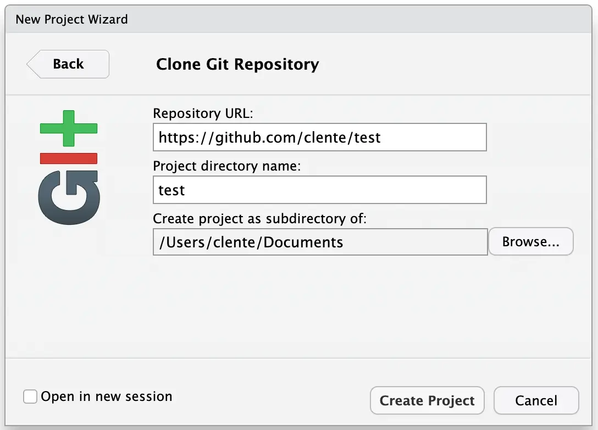
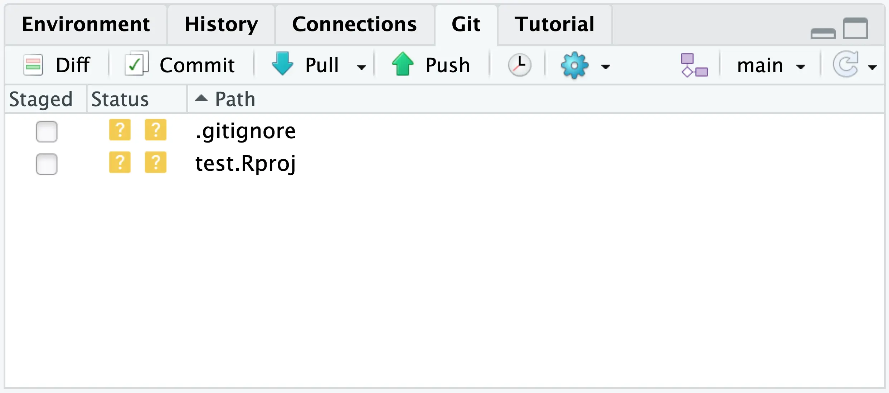

git --versiongit version 2.39.0Git is an open source software for version control that has become one of the most useful gadgets in the modern programmer’s toolbox. It’s also a nightmare for beginners.
Linus Torvalds, creator of Linux, started development on Git in early 2005 after giving up on the source-control management system he previously used. Git’s official README highlights its duality:
[…] He described the tool as “the stupid content tracker” and the name as (depending on your mood): […]
- “global information tracker”: you’re in a good mood, and it actually works for you. Angels sing, and a light suddenly fills the room.
- “goddamn idiotic truckload of sh*t”: when it breaks
But don’t be scared if you have no clue about how to use Git! The good news is that there are plenty of tutorials online that teach you the basics and, most likely, you won’t even have to learn the advanced stuff for quite some time.
There is a whole book with almost 50 (!) chapters devoted to using Git with R: Happy Git and GitHub for the useR (sometimes abbreviated simply as Happy Git) by Jennifer Bryan. This chapter is but the tip of the Git iceberg, so keep in mind that I’m glossing over a lot of detail in here.
I suggest you install Git before learning what to do with it. This guarantees that you’ll be able to try everything in this chapter out, so don’t procrastinate. Happy Git has a full chapter about the installation process and corner cases you might run into, but the main points are:
sudo apt install git on the terminal.To check whether you’ve installed Git correctly, verify that you have the Git Bash program (on Windows) or run the following command on your terminal (on Linux/Mac):
git --versiongit version 2.39.0With Git properly installed on your computer, register for a GitHub account. It will all make sense later, but this is a cloud platform that stores your Git repositories; it’s a like a Google Drive for code. The registration is fast and using GitHub is free (most of the time), so you don’t have to worry about this step.
Now you can introduce yourself to Git. This is how we connect our local Git installation with our remote GitHub account. Jump back into R, load the usethis package, and tell Git who you are. In the command below, change NAME to your name and EMAIL to the email address you used when creating your GitHub account:
library(usethis)
use_git_config(user.name = "NAME", user.email = "EMAIL")
git_default_branch_configure()For your local Git installation to be able to communicate with GitHub, you’ll need to provide it with your “password”. I’m using quotes here because handing out your actual password to a program in your computer would be very insecure. Instead, we’ll use something called a Personal Access Token (PAT).
A PAT is a long string of characters and numbers that GitHub generates for you and that can be used for authentication instead of your password. There are three main advantages to this approach:
PATs have very limited permissions by default, meaning that, if they end up being leaked, no one can take control of your account. Still, you should never share your PAT with anyone!
If someone does get their hands on one of your PATs, you can remotely deactivate them. This is much simpler than changing your password or hunting down the culprit.
You can also set an expiration date for each and every PAT you generate, which is the best way to prevent your credentials from leaking by way of old software and hardware you forgot to decommission.
To generate your first PAT, use usethis::create_github_token():
create_github_token()This command will open a template on GitHub that you can use to generate a PAT. If you don’t want to learn about the minutiae of access scopes, you can simply change the name of the PAT to something more descriptive (e.g. “Work PC PAT”) and click Create token.
GitHub will then generate a PAT and allow you to copy it. Make sure to copy it now! For security reasons, you’ll not be able to see your PAT ever again.
Next, you should store your PAT in a place that Git can access. Simply install the gitcreds package and run gitcreds::gitcreds_set():
library(gitcreds)
gitcreds_set()? Enter password or token: YOUR_PAT_GOES_HERE
-> Adding new credentials...
-> Removing credentials from cache...
-> Done.If you accepted usethis’ template, then you’ll need to re-generate this PAT once a month. GitHub will make sure to warn you when a token is close to expiring and even provide you with a nice shortcut to do so, meaning you don’t have to worry about choosing the same access scopes every time. Once you have your new PAT, run gitcreds::gitcreds_set() again and choose Replace these credentials when prompted:
gitcreds_set()-> Your current credentials for 'https://github.com':
protocol: https
host : github.com
username: PersonalAccessToken
password: <-- hidden -->
-> What would you like to do?
1: Keep these credentials
2: Replace these credentials
3: See the password / token
Selection: 2
-> Removing current credentials...
? Enter new password or token: YOUR_NEW_PAT_GOES_HERE
-> Adding new credentials...
-> Removing credentials from cache...
-> Done.To make sure your setup is in tip-top shape, you can use either usethis::git_sitrep() or gh::gh_whoami() (just make sure to install the gh package first):
gh::gh_whoami(){
"name": "NAME",
"login": "USERNAME",
"html_url": "https://github.com/USERNAME",
"scopes": "gist, repo, workflow",
"token": "PAT"
}A repository (often simply called “repo”) is a folder that uses Git for version control. Now that you have installed Git, created a GitHub account, and introduced yourself, you should be ready to create your first R project that is also a repo.
First, go to https://github.com/new and chose a name for your temporary repo. Mine is going to be called test. Then add a simple description and check the Add a README file box.

Once you’re happy with your repo, click Create repository at the bottom of the page. If you did everything right, you should see a screen like in the image below.

Now let’s go back to RStudio. Just like we did in Chapter 3, go to File > New Project, but this time you should select Version Control > Git. Fill the prompt with your GitHub repo’s URL and select a place to create the R project:

Finally, click Create Project to finish the process. If this process didn’t work for you, make sure to check out Happy Git’s chapter on troubleshooting. If it has, your RStudio should now have a new Git pane:

Now you should be more than ready to learn how to actually use Git and GitHub.